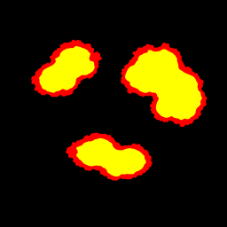
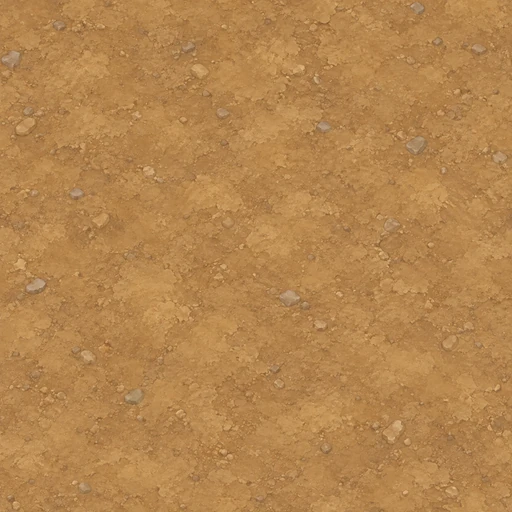

Грязь с лужами
R: влажная земля и вода. G: вода. B: 0. Непрозрачный albedo sRGB, маска — линейные данные.

Поверхности
Травяной край и колея добавляются по форме маршрута в игре.

Отдельные материалы для подключения Claude. Грязь показана в пропорциях настоящего эллипса. Это просмотр ассетов; итоговый вид проверяется в игре.
R: влажная земля и вода. G: вода. B: 0. Непрозрачный albedo sRGB, маска — линейные данные.

Травяной край и колея добавляются по форме маршрута в игре.
